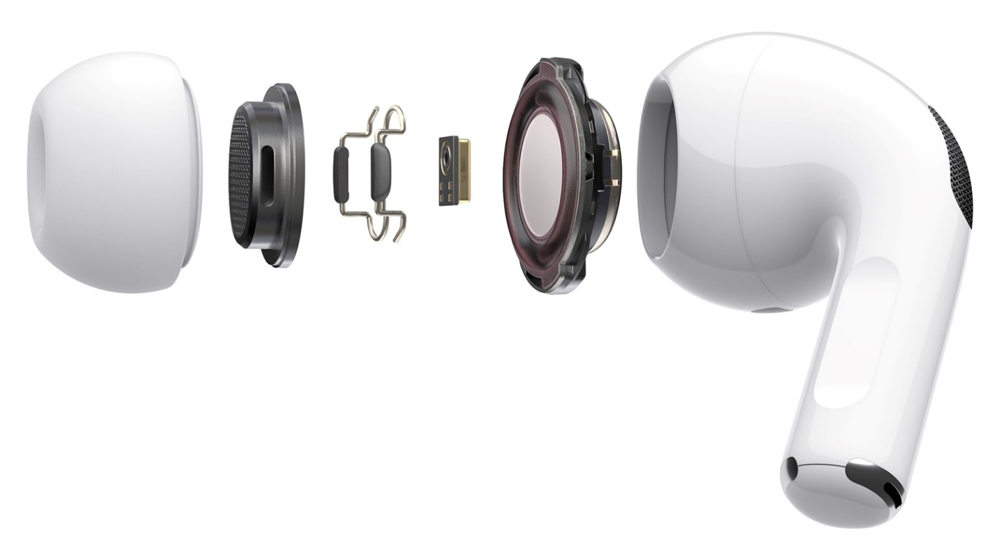
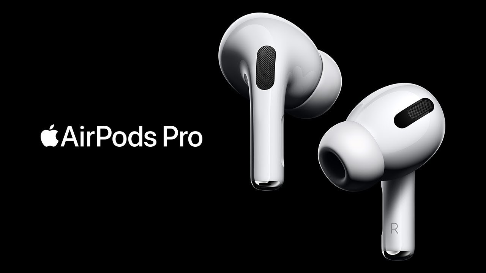
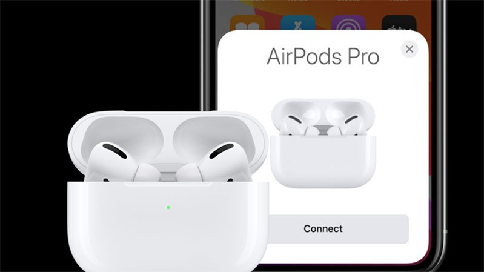

Apple AirPods Pro - Chính Hãng VN/A

Tai nghe Apple AirPods Pro - Chính Hãng (VN/A) được phân phối tại Hoàng Hà Mobile đều được nhập trực tiếp từ Công ty TNHH Apple Việt Nam thông qua các nhà phân phối ủy quyền
Mua tai nghe Apple AirPods Pro chính hãng, giá rẻ tại Hoàng Hà Mobile
AirPods Pro là chiếc tai nghe không dây nổi tiếng đến từ thương hiệu Apple. Với thiết kế tinh tế cùng công nghệ hiện đại, sản phẩm này sẽ mang đến cho bạn những trải nghiệm âm thanh sâu lắng, chân thực.
Thiết kế in-ear siêu nhỏ gọn, tiện dụng
Apple AirPods Pro đã tạm biệt kiểu dáng ear-bud quen thuộc bấy lâu nay và chuyển sang thiết kế in-ear. Thay vì tạo ra một chiếc tai nghe được làm 100% từ nhựa như trước đây thì hãng đã thêm phần đệm silicon mềm mại, êm ái cho tai nghe. Đặc biệt đệm silicon còn có khả năng cách âm cực tốt, ngăn chặn tạp âm hiệu quả. Trong hộp đựng AirPods Pro sẽ có sẵn ba kích cỡ đệm khác nhau để bạn chọn lựa sao cho phù hợp và thoải mái nhất.

Tai nghe có trọng lượng tương đối nhẹ, chỉ là 5.4g và khi đi kèm với hộp thì là 45.6g. Nhờ vậy mà nó có thể đồng hành cùng bạn mọi lúc mọi nơi. Apple còn trang bị lõi không khí bên trong tai nghe nhằm giúp giảm áp lực lên tai. Đồng thời khiến cho bạn luôn cảm thấy thoải mái kể cả khi đeo cả ngày dài. Mút silicon cũng giúp tai nghe bám chắc vào trong tai, không bị rơi ra ngoài. Bên cạnh đó, sản phẩm này còn đạt tiêu chuẩn chống nước IPX4, đảm bảo chất lượng kể cả khi tập luyện thể thao hay gặp phải trời mưa.
Cơ chế khử ồn chuyên nghiệp mang đến âm thanh tuyệt hảo
AirPods Pro là chiếc tai nghe nhét trong đầu tiên sở hữu cơ chế khử ồn chuyên nghiệp. Sản phẩm sẽ có một micro ngoài với khả năng phát hiện những tạp âm xung quanh. Sau khi phát hiện nó sẽ tự động xử lý, loại bỏ âm thanh trước khi truyền đến tai bạn. Bên cạnh đó, một micro khác bên trong cũng nhận biết tiếng ồn không mong muốn và loại bỏ chúng.
 